1. Problem Context and Background
1.1 Project Background and Industry Partner
This project is conducted at the National University of Singapore (NUS) in collaboration with the Organization Design & Innovation (ODI) Department under National Heritage Board (NHB). Jervais Choo, deputy director of ODI department, emphasizes that accessibility for visually impaired people in cultural heritage understanding is important. ODI department is seeking approaches, making archaeological objects more accessible for visual impaired people through physical interaction and audio feedback.
Battle for Blindness Foundation (n.d.) points out that visual impairment is categorized into four levels based on visual acuity: mild vision impairment, moderate vision impairment, severe vision impairment, and blindness. This project primarily focuses on individuals with severe vision impairment. People in this category have a visual acuity range from 20/400 to 20/200. They experience a major loss of central vision, which makes daily tasks and independent travel very difficult. They also struggle to read standard text, see distant details, or recognize faces. Regular glasses cannot correct this issue. (Pesonen et al., 2023) However, the tactile & audio interface designed in this project is also applies to users with mild and moderate vision impairment.
During the initial investigation, our team and supervisor conducted field research at ArCH Square. It is a new gallery, managed by HeritageSG, under NHB. Different from ordinary museums, ArCH Square is also an education and outreach center for archaeology and Intangible Cultural Heritage (ICH). (National Heritage Board, 2025) It sets up workshops and archaeology laboratories, where visitors can learn to process archaeological finds. (Ng, 2025) Zinnurain Nasir, one of the staff of ArCH Square indicated that these facilities were constructed to make archaeological collections of Singapore more accessible while providing a space for cultural heritage practitioners to share traditional skills.
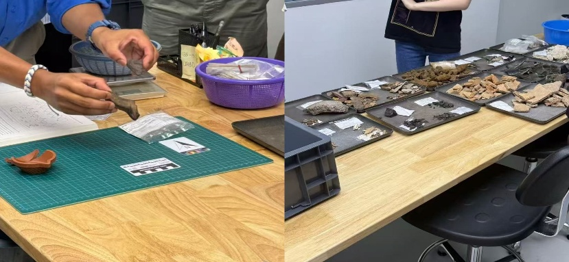
1.2 Historical and Archaeological Context
Currently, the artifacts displayed in ArCH Square are mainly the ceramic objects from shipwrecks sunken in Singapore waters and adjacent waters. Zinn Nasir claimed that these relics were vital material evidence, supporting ancient Singapore as a strategic trade linkage.
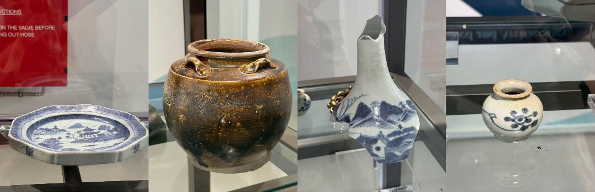
By the mid-14th century, Temasek (present-day Singapore) had developed into an active maritime trading port. (Miksic, 2013; Chandrashekhar, 2017) Situated near the southern end of the Straits of Malacca, Singapore occupied a strategic position connecting the South China Sea and the Indian Ocean. (Kwa, 2012) Archaeological excavations have uncovered large quantities of imported ceramics, glass beads, coins, and other trade artefacts.
Furthermore, the 14th-century Temasek Wreck yielded a substantial cargo of Chinese ceramics. (Chandrashekhar, 2017; Flecker, 2025) Together, these terrestrial and underwater discoveries provide material evidence of Singapore's involvement in regional maritime trade (Kwa, 2012; Miksic, 2013), making it an important archaeological site for studying marine trade in Southeast Asia.
2. Problem Identification
2.1 Observation
Avni et al. (2025) state that low vision visitors have apparent challenges to access information in conventional exhibitions. At present, increasing number of museums actively explore interactive guides to improve exhibition accessibility for visually impaired visitors. (Cavazos Quero et al., 2021) During the field research in ArCH Square, Zinnurain and other researchers indicated that the existing display and facilities are unable to support visually impaired visitors in accessing information. All staff in ArCH Square often feel concerned and regretful when visually impaired visitors wish to visit the exhibition, yet ArCH Square is unable to host them.
Via the questionnaire research with range of 29, we learn that 57.1% of participants complain that museums always use long text description, and this discourages their interest in learning culture heritage. This reveals a limitation of traditional exhibition: highly rely on visually oriented information. Visitors have no choice but to access information via passive observation, without opportunities to associate culture practices and culture meanings. As a result, BLV visitors lack accessibility.
2.2 Problem Statement
Some visually impaired people tend to explore and understand the culture heritage of Singapore. However, the prevalently visual oriented exhibitions, including ArCH Square, lack the support for blind and low vision people to physically access artifacts then understand related culture heritage.
Therefore, there is a need for an accessible and interactive approach that provides low vision visitors opportunities to explore artifacts through touching while receiving relevant historical and cultural information.
3. Survey and Literature Review
This session would focus on surveying and evaluating existing solutions used to improve museum interaction and accessibility. Currently, 3D printed replicas and audio feedback players are two most frequently adopted technologies. These shared technologies are embedded with different interaction logics, yield varied insights and experiences. While combing assorted case studies, we obtain three key inspirations for designing the interaction interface.
3.1 Key Inspiration 1: Balancing enlarged fine details and handheld size
3D-printed replicas have been introduced in museums to allow visitors to physically explore artefacts without touching the originals. Karaduman et al. (2023) conducted a study involving 11 BLV participants, who reported these replicas do improve artifacts accessibility. Moreover, Reichinger et al. (2018) trialed the tactile 3-D printed relief of the Meissen table fountain across in total 14 sighted and BLV participants. This research group suggested that simply reproducing an artefact at its original scale may not be sufficient for tactile exploration. Fine details, such as shallow patterns and small decorative features, may be difficult for participants to distinguish at original scale. The replicas of artifacts should be constructed with enlarged size. In addition, 4 BLV participants reported that they appreciate enlarging some details on replicas, while omitting some non-essential fine details. An simplified outline would help them focus more on key elements.
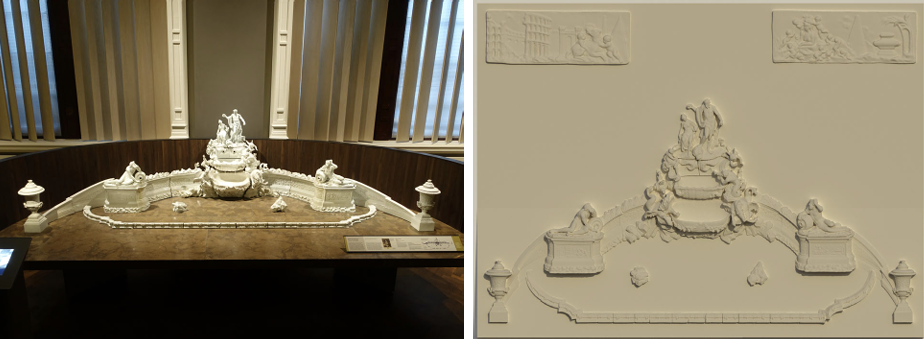
However, some visually impaired visitors also demand replicas with handheld size, which allows them to hold, move, and rotate 3D printed models. (Shi et al., 2017) Combing the demand for enlarged fine details and requirement for free touching, we obtain key inspiration 1: We should prioritize enlarged fine details while maintaining a size suitable for handheld free tactile exploration.
3.2 Key Inspiration 2: Finding more convenient way for audio feedback triggering
Audio player is a vital complement for tactile replicas, as it would provide additional descriptive information while touching. Avni et al. (2025) reports that some 3D-printed replicas were enlarged or reduced without clearly indicating their scale, leading visitors to misunderstand the actual dimensions. Adding audio descriptions on scale to the interface would help prevent such misunderstandings. This research group designs three different methods to trigger audio playback:
| Methods | Image Demonstration |
|---|---|
|
Picking up then playing audio feedback (SUS score: 87.00) |
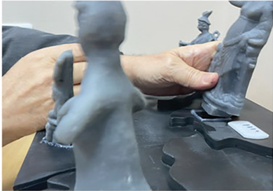 |
|
Pressing down buttons then playing audio feedback (SUS score: 98.08) |
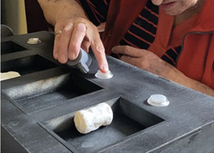 |
|
RFID scanning then play audio feedback (SUS score: 79.33) |
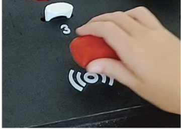 |
Table 1 Three different ways to get audio information (Avni et al., 2025)
In evaluation of these interacting ways, “pressing down buttons” gets the highest SUS score, while participants comment it as the convenient and easy for using. (Avni et al., 2025) Hence we obtain key inspiration 2: Finding more convenient way for triggering audio feedback.
3.3 Key Inspiration 3: Ensuring synchronization of touching and audio feedback
Though “pressing down buttons” is commented as usable and convenient audio activating method, this design has an apparent disadvantage: easily get misaligned between touching and audio information. Avni et al. (2025) report that visually impaired visitors may struggle to locate the features being described during their exploration. Furthermore, Coughlan et al. (2020) reported that audio feedback could lag behind the user's current point of interaction, even during slow movements. Such delays may reduce the alignment between physical exploration and audio guidance. These case studies yield key inspiration 3: Ensuring the synchronization of tactile exploration and audio feedback content when design the activation method of audio feedback.
4. Selected Artefact and Design Concept
4.1 Selected Artifact
The artifact selected in this project is a ninth-century ceramic bowl from the Tang Shipwreck, with origin of Changsha, China. (Tan, 2022) The ceramic bowl with Makara pattern is a sort of representative artifact, large number of comparable objects are unearthed. (National Heritage Board, 2020)
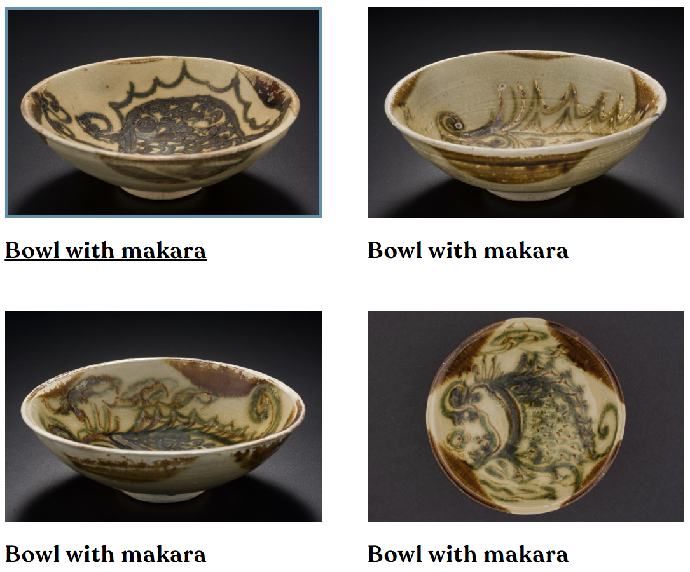
The pattern on ceramic bowl depicts a mythical creature, Makara. It is originated in Indian artistic traditions with composites assorted different biological features, representing the power of aqua. (Los Angeles County Museum of Art, n.d.) As the motif spread across Asia, its appearance changed in different cultural contexts. For example, the makaras on Changsha ceramic bowls are often portraited with dragon snout features. (Rahmandoust & He, 2026)
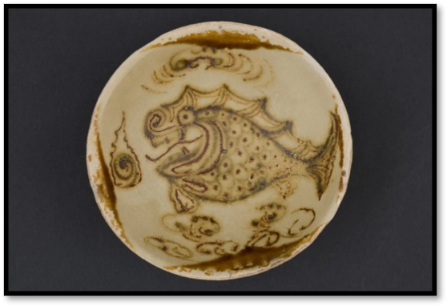
While those makara-related artifacts unearthed in Nepal shows the features of snout and head of an elephant, the body and feet of a crocodile, and the foliated tail of a fish or peacock. (Los Angeles County Museum of Art, n.d.)
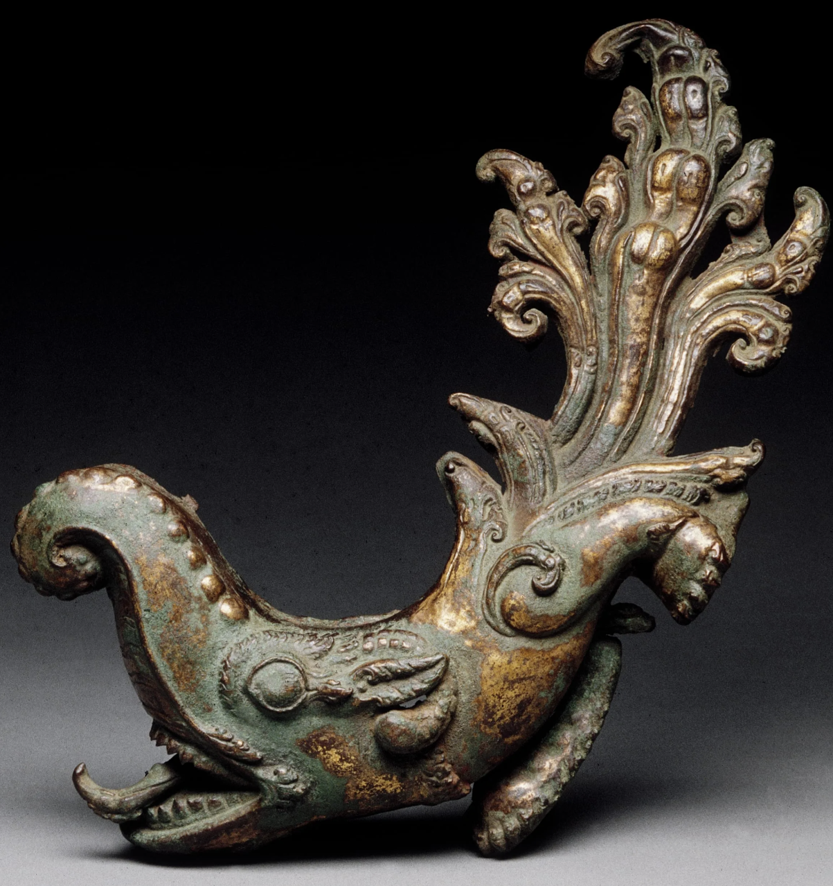
Schottenhammer (2015) claims that the exact route of Tang shipwreck is still in uncertainty, with a relatively prevalent hypothesis that in final voyage, the ship departed from Guangdong of China, planned to pass through the Malacca Strait, and ultimately reached the Persian Gulf. However, it somehow deviated from planned route and finally sunk in Java Sea. Tang shipwreck and Makara bowl witness the ceramic trade between China and the western Indian Ocean. (Carfantan, 2018; Hsieh, 2010) Shermaine Lim, an archaeology researcher in ArCH Square, suggest that this Makara bowl is one of material evidence that supports ancient Singapore is an important trade linkage.
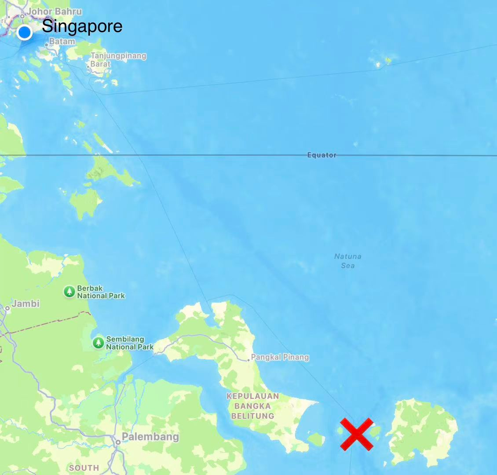
4.2 Design goal
In this project, we aim to design an interaction interface. Allowing BLV visitors easily access the cultural & historical context of Makara, while how Makara bowl witness & support Singapore as a key trade linkage via touching the Makara bowl replicas then triggering related audio feedback.
| Category | Design Goal | Description |
|---|---|---|
| Target User | Ensure Accessibility | Allow visually impaired visitors to easily access the exhibit. |
| Interaction Method | Tactile Exploration & Audio Feedback | Enable physical touching with Makara bowl replicas to activate relevant audio information. |
| Content Delivery | Cultural & Historical Context | Convey the cultural background of the Makara motif. |
| Historical Significance | Evidence of Trade Linkage | Highlight how the Makara bowl supports ancient Singapore as a key trade linkage. |
Table 2 Design goal
4.3 Concept Design
This session descripts design journey of 3D printed replicas and activation methods of audio feedback, under the guidance of three key inspirations and design goals.
| No. | Content of inspiration |
|---|---|
| 1 | Balancing enlarged fine details and handheld size |
| 2 | Finding more convenient way for audio feedback triggering |
| 3 | Ensuring synchronization of touching and audio feedback |
Table 3 Recalling three key inspirations
4.3.1 Design for 3D printed replicas
Viewing various existing design for touching interaction interface, only one touching replica is designed for an artifact. This triggers the tradeoff between handling size and enlarged fine details. This project would remove this trade-off. We will design four 3D-printed replicas for the makara bowl. Each individual replica presents distinct information. Distributing different information across separate replicas eliminates the compromise between competing requirements.
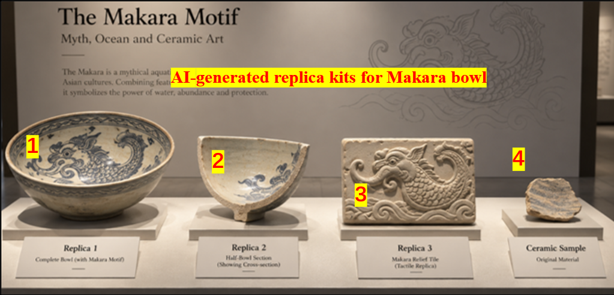
While the focus of each kit is listed below:
| Description of each kit | Function |
|---|---|
|
Presenting the bowl's overall shape and orientation |
|
Showing a half-section so visitors can trace the rim, wall thickness and foot ring |
|
Showing enlarged fine details of 2.5D Makara relief |
(not resin replica) |
Helping visitors understand the feeling and texture of ceramic sherd |
Table 4 Description on replica kits
4.3.2 Design for audio activation methods
Activation methods for audio information must be convenient and ensure the synchronization. In this project, the audio information is divided into three different categories. Different activation method would be applied on them.
| Type | Content |
|---|---|
| Introduction | Basic information Makara bowl and ceramic material, archaeological significance of Singapore waters |
| Instruction | Telling visitors how to use the interface |
| Localized Description | Descript outlines of fine features of the artifact |
Table 5 Type of audio feedback
For introduction type, the content does not have strong relation with which part of replica is touched by visitors. Visitors can freely exploration while listening to the brief introduction. Hence, we would adopt button-triggered audio for replica 1 and 4. When visitors pick up the kit one and then press down the button besides, the introduction would be played.
In contrast, localized description type should strictly match the part touched by visitors. Interaction with replicas 2 and 3 should ensure ‘where is touched, where is descripted’.
Fig 6 illustrates the Tooteko developed by D’Agnano et al. (2015) It consists of several Near Field Communication (NFC) tags, a smart ring integrated with PN532 processor and Atmega32u4 processor, a mobile app which receives signal and plays audio files.
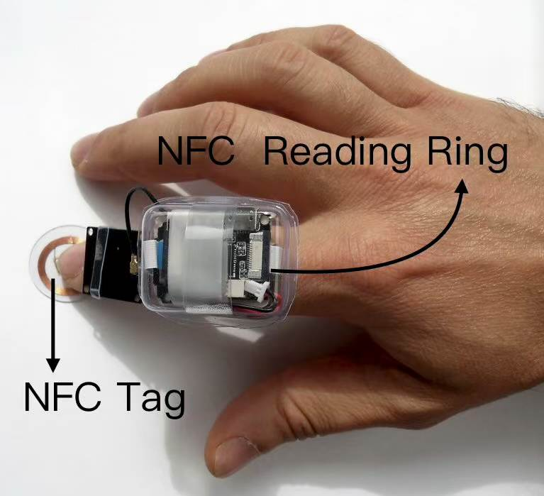
Attaching NFC tags on each fine feature surface of replicas 2 and 3. The visitor wears the smart ring and approaches one of tags. The smart ring identifies the tag and then sends signal via blue teeth to the mobile app. Hence the corresponding audio description is played. The content of audio feedback would always match the touched region of the replica.
The instruction type, (e.g. “Please pressing this button” & “Please wearing this smart ring”) should be informed to user by interface proactively when detecting proximity and lingering of visitors. Inspired by Skowronski et al. (2019), we propose using a ceiling-mounted depth camera to detect visitors' positions and movements in front of the display. While four virtual detection zones will be defined, each corresponding to one tactile component. When a visitor approaches the display and remains within the detection area for a short period, the system will automatically play the instruction, guiding them to stand before each kit and conduct touching experience. After the visitor finishes and chooses to continue, the system will guide them to next replica.
5. Solution and Prototype Construction
5.1 Solution Proposal and Users’ Journey
The first half of this project is mainly focused on investigating historical context of Makara bowl and existing design of interaction interface. The chart below illustrates the brief framework of solution.
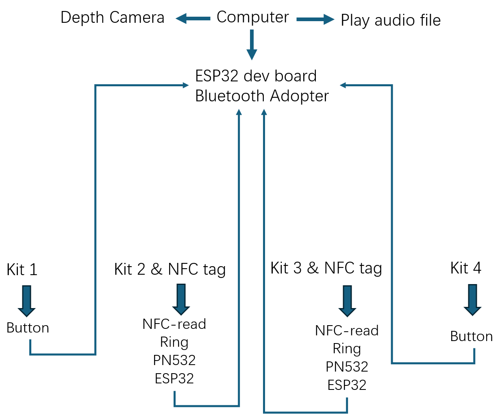
While visitors would access Makara bowl following the users’ journey shown below:
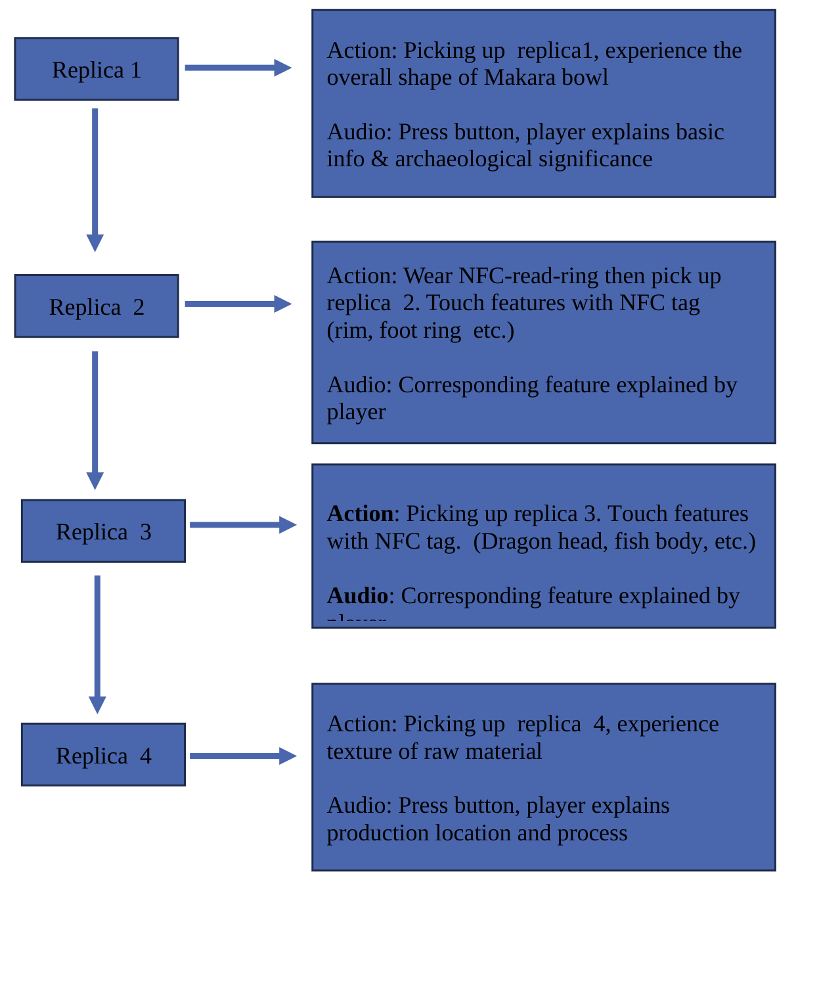
5.2 Prototype Construction
This semester, our group construct and print models of four replicas. For first version prototype, the 3D printing files are from open-source website and self-constructing. We would request officially authorized 3D printing data of Makara bowl from NHB.
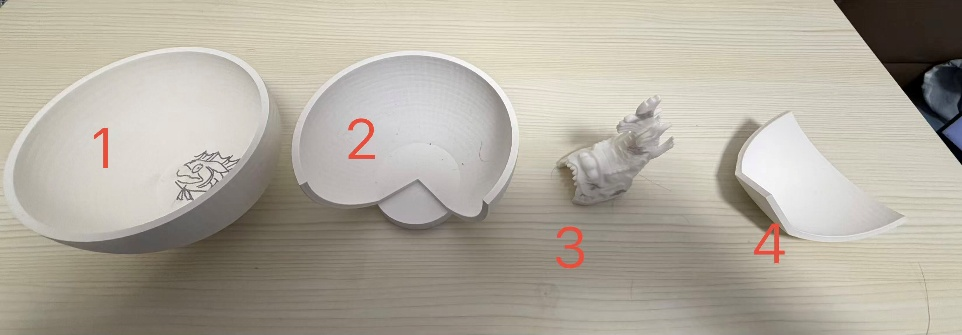
The function of each replica follows concept design referred in table 4. Replicas 1 and 2 represent the overall shape and half-section of ceramic bowl respectively. While replica 3 shows the body features of Makara. Replica 4 would be replaced by a real ceramic sample in final product.
We notice that stringing defect appears on bowl bottoms of replica 1 and 2, which reminds our group reorient the print orientation or add extra supporting structure when producing the final version object.
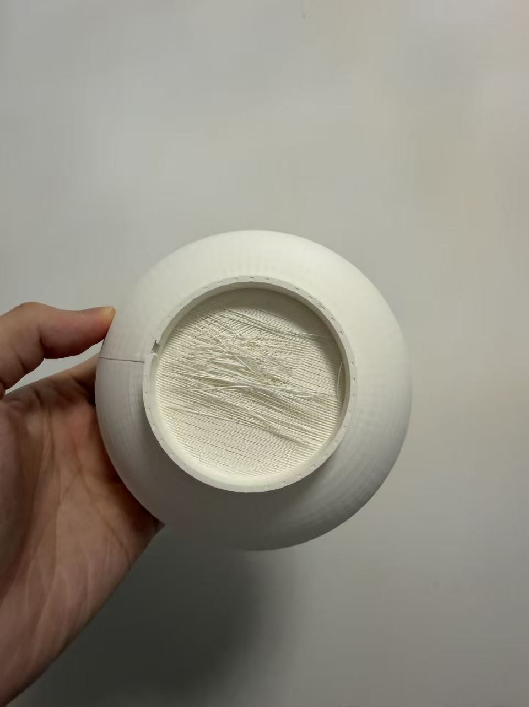
The QR code below links the demonstration of first version prototype. While the audio feedback file of replicas 1 and 4 are stored locally on the computer and can be played upon button trigger under Python script control. In this video demonstration, the audio feedback for Replicas 2 and 3 was added via post-production dubbing.
6. Future Plan
In second half of this project, we would design the content of audio files and the python script for controlling. Then purchasing essential electronic components for visitor detection, NFC sensing, etc. and assembling second version prototype. We would evaluate it via conducting role play test, peers would be blindfolded to simulate visually impaired participants and then test the usability of interaction interface. Detailed information is illustrated in Gantt Chart Fig 12 below.
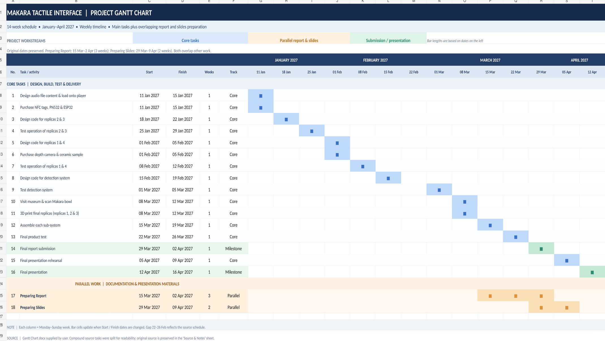
7. Reference List
Avni, Y., Danial-Saad, A., Sheidin, J., & Kuflik, T. (2025). Enhancing museum accessibility for blind and low vision visitors through interactive multimodal tangible interfaces. International Journal of Human-Computer Studies, 198, Article 103469. https://doi.org/10.1016/j.ijhcs.2025.103469
Battle for Blindness Foundation. (n.d.). Types of visual impairment: Understanding different levels of vision loss. https://battleforblindness.org/types-of-visual-impairment-understanding-different-levels-of-vision-loss
Carfantan, C. (2018). The Changsha Makara bowl. PASSAGE, 8. https://www.fom.sg/Upload/ckeditor/Passage%20Jan-Feb2018%20FINAL.PDF
Coughlan, J. M., Biggs, B., Rivière, M.-A., & Shen, H. (2020). An audio-based 3D spatial guidance AR system for blind users. In K. Miesenberger, R. Manduchi, M. Covarrubias Rodriguez, & P. Peňáz (Eds.), Computers helping people with special needs (Lecture Notes in Computer Science, Vol. 12376, pp. 475–484). Springer. https://doi.org/10.1007/978-3-030-58796-3_55
D’Agnano, F., Balletti, C., Guerra, F., & Vernier, P. (2015). Tooteko: A case study of augmented reality for an accessible cultural heritage. Digitization, 3D printing and sensors for an audio-tactile experience. The International Archives of the Photogrammetry, Remote Sensing and Spatial Information Sciences, XL-5/W4, 207–213. https://doi.org/10.5194/isprsarchives-XL-5-W4-207-2015
Hsieh, M.-L. (2010). The navigational route of the Belitung wreck and late Tang ceramic trade. In R. Krahl, J. Guy, J. K. Wilson, & J. Raby (Eds.), Shipwrecked: Tang treasures and monsoon winds (pp. 137–143). Arthur M. Sackler Gallery. https://asia-archive.si.edu/research/exhibition-catalogues/shipwrecked-catalog/
Karaduman, H., Alan, Ü., & Yiğit, E. Ö. (2023). Beyond “do not touch”: The experience of a three-dimensional printed artifacts museum as an alternative to traditional museums for visitors who are blind and partially sighted. Universal Access in the Information Society, 22(3), 811–824. https://doi.org/10.1007/s10209-022-00880-0
Kwa, C. G. (2012). Locating Singapore on the maritime silk road: Evidence from maritime archaeology, ninth to early nineteenth centuries. https://www.iseas.edu.sg/wp-content/uploads/pdfs/nscwps10.pdf
Los Angeles County Museum of Art. (n.d.). Mythical aquatic creature (Makara) [Sculpture]. https://collections.lacma.org/object/53186
Miksic, J. N. (2013). Singapore and the Silk Road of the Sea, 1300–1800. NUS Press. https://nuspress.nus.edu.sg/collections/rest-of-asia-regional/products/singapore-and-the-silk-road-of-the-sea-1300-1800
National Heritage Board. (n.d.). Collection record 1306063 [Online collection record]. Roots. https://www.roots.gov.sg/Collection-Landing/listing/1306063
National Heritage Board. (2025, October 24). ArCH Square opens as the region's first centre for archaeology and intangible cultural heritage [Media release]. https://www.nhb.gov.sg/-/media/nhb/files/media/releases/2025/media-release--arch-square-officially-opens-as-the-regions-first-centre-for-archaeology-and-ichfinal.pdf
Ng, K. G. (2025, October 10). Learn to work with Singapore's archaeological finds at new heritage centre in Jalan Sultan. The Straits Times. https://www.straitstimes.com/singapore/learn-to-work-with-singapores-archaeological-finds-at-new-heritage-centre-in-jalan-sultan
Pesonen, T., Saarela, K.-M., Falck, A., Edgren, J., Kyngäs, H., & Siira, H. (2023). Visual impairment and the need for vision care services amongst older Finnish people receiving home care. Nursing Open, 10(4), 2519–2529. https://doi.org/10.1002/nop2.1510
Rahmandoust, M., & He, R. (2026). Makara across waters: Visual and material adaptation of a mythical motif from Indian guardianship to Chinese ceramic export. Arts, 15(8), Article 172. https://doi.org/10.3390/arts15080172
Reichinger, A., Garcia Carrizosa, H., & Travnicek, C. (2018). Designing an interactive tactile relief of the Meissen table fountain. In K. Miesenberger & G. Kouroupetroglou (Eds.), Computers helping people with special needs (Lecture Notes in Computer Science, Vol. 10897, pp. 209–216). Springer. https://doi.org/10.1007/978-3-319-94274-2_28
Schottenhammer, A. (2015). Seafaring, trade, and knowledge transfer: Maritime politics and commerce in early Middle Period to early modern China. Crossroads, 11, 1–30. Seafaring, trade, and knowledge transfer: maritime politics and commerce in early middle period to early modern China
Shi, L., Zhao, Y., & Azenkot, S. (2017). Markit and Talkit: A low-barrier toolkit to augment 3D printed models with audio annotations. In Proceedings of the 30th Annual ACM Symposium on User Interface Software and Technology (pp. 493–506). Association for Computing Machinery. https://doi.org/10.1145/3126594.3126650
Skowronski, M., Klinkhammer, D., & Reiterer, H. (2019). Argus Vision: A tracking tool for exhibition designers. i-com, 18(1), 41–53. https://doi.org/10.1515/icom-2019-0001
Tan, Z. H. (2022). The chimeric trace: The Makara and other connections to come. Art in Translation, 14(3), 338–370. https://doi.org/10.1080/17561310.2022.2114674